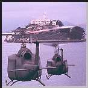

Contents | Features | Reviews | Books | Archives | Store |
 |
|
| Movie Credits | Buy It! |
The Rock
Review by Carrie Gorringe
 |
Starring Sean Connery, Screenplay by David Weisberg, |
Before The Rock even opened this June, there was an elegiac air about the film, an impression created even before the death of producer Don Simpson on January 19 of this year, midway through the film's production. The team of Don Simpson and Jerry Bruckheimer, best known as the producers of testosterone-laden hits such as Top Gun and Bad Boys (and flops like Days of Thunder), had been dissolved a month or so beforehand, for reasons most intimately related to Simpson's lifestyle choices, the least flagrant of which were an addiction to yo-yo dieting and a use of recreational drugs that was considered profligate, even by Hollywood standards. So, as the final Simpson-Bruckheimer co-production, The Rock carried with it the burden of being the final nail in the coffin, if you'll pardon the metaphor, of both Simpson's career and the partnership. Paraphrasing Proust, the film carried the remembrance of things already past. It was the ultimate paradox: a museum piece fresh off the assembly line, but one with a subtext of scandal surrounding it. In this era of "rediscovering" moral values, Hollywood must have been holding its breath somewhat.
Fortunately for all concerned, Simpson's notoriety did not extend beyond the environs of LA, and The Rock is a worthy successor to others in what might be described, with some stretching of imagination, as the Simpson-Bruckheimer oeuvre. Within the confines of Alcatraz prison, sits Francis X. Hummel (Harris), a spit-and-polish Marine general who has decided to stop polishing his medals and boots and begin spitting on the US Government. This hero of Vietnam and the Gulf War is hopping mad because the government refuses to pay any benefits to the families of the covert operatives that General Hummel had commanded, or to acknowledge their contributions in making the world safe for democracy and Coca-Cola. So the General and his rogue forces have commandeered Alcatraz and demanded recognition and benefits, plus $100 million as an up-front fee for their role as coercive consultants. If the Government does not settle the account to his satisfaction within forty hours, General Hummel has some hostages that he can eliminate, and, if this threat is insufficiently persuasive, then the back-up plan involves several missiles containing very deadly VX gas with enough homicidal force to eliminate several major cities on the West Coast, but especially San Francisco and its environs.
Naturally, the government doesn't take too nicely to being threatened by a renegade general, even if he is a hero. So the government brings in Dr. Stanley Goodspeed (Cage) an FBI agent who is an expert in chemical warfare. It also reclaims one John Patrick Mason (Connery) from thirty-some-odd years of penal mothballing. Mason, a former MI-5 agent, was committed to Alcatraz for having stolen microfilmed copies of J. Edgar Hoover's covert files on anybody unfortunate enough to fall within his paranoid purview. More importantly, official stories to the contrary, Mason is posited as the only individual to have escaped from Alcatraz (as anyone who has ever toured the forbidding, island-based structure, or who has stood in the prison's exercise yard in the wake of the icy winds coming off the even icier waters of San Francisco Bay knows, this would not be an inconsiderable accomplishment). Mason's knowledge of the prison's underbelly is invaluable, since available blueprints have long since dwindled into irrelevance. A car chase and several personal angles later, accompanied by a contingent of Navy SEALS, Mason and Goodspeed hasten to Alcatraz to settle the general's hash, free the hostages and disarm the missiles.
Assessing the effectiveness of a typical Simpson-Bruckheimer offering is never really easy, for the simple reason that their films are not so much the type to which someone reacts as they are the type of film that specializes in audience shakedown. It's passive filmgoing with a vengeance: through machine-gun editing, 120-decibel sound and overwhelming special effects, these films push you further and further back into the padding of your seat in retreat until, confronted by the hard seat back, you wave a white flag and capitulate to your pummeling like a good little attendee, ignoring such trivialities as plot lines so full of faults they could pass for the San Andreas and dialogue that alternates between some degree of prescient wit and lines that belong to the category of first-class groaners (Poor Sean Connery gets the worst of this: Mason starts out with urbanely clever dialogue, with a sly reference to Connery's Bondian past -- at his first meeting with Goodspeed, Mason utters a line borrowed verbatim from Diamonds Are Forever -- only to be reduced to making asinine declarations such as "heroes get to f--- the prom queen" by the film's halfway point).
This is not to say that such films are not entertaining, merely that the audience members can only react to them in the way that they might react to a tidal wave. And The Rock, for all of its faults, is entertaining. It helps that director Bay has followed the most important dictum in making this type of film: keep the action moving, stupid. And he does, even to the point where keeping subjects within the frame is a more high-risk proposition than the stunts themselves. A most notable offender in this case is the car-chase sequence through San Francisco, in which Nicholas Cage's head is often bisected perpendicularly too many times for visual comfort. This is nothing more than permitting style to overcome basic rules of visual content. Instead of attempting to outdo such car chases as those in Bullitt and The French Connection, Bay (the director of Bad Boys, TV commercials, and music videos) should have reviewed them for their ability to keep actors in frame at speeds of over 100 miles per hour. All the action in the world won't help if the audience can't make head or tail of it.
However, the real saving grace in The Rock is the marvelous pair of performances from Connery and Cage, both of whom seem to have set their irony quotients on a setting high enough to get the audience over the most improbable portions of the film, but not so high that the enterprise at hand falls over into the realm of self-parody. It's a balancing act of almost exquisitely-painful proportions, and part of the fun comes from watching the two actors shifting around in their roles and pulling back just at the brink. In particular, Cage gives a performance that is a pleasure to watch from beginning to end; usually I find the underlying goofiness of his typical on-screen persona a little much to bear at some point in a film, but it works here, probably because it accentuates the film's unspoken dictum that you would have to be more than a little unbalanced in the cranium to make chemical weapons your life's work. Harris's portrayal of duty and honor run amok is at times a bit too rigidly stereotypical, but works well enough most of the time to act as an effective counterpoint to the Connery/Cage teaming. But, a note to Messrs. Weisberg, Cook and Rosner for your next screenplay: we could do without the whiny women such as Goodspeed's fiancée, Carla (Marcil), who rediscovers her religion's stance on unwed motherhood at about the same time as she discovers her unplanned pregnancy (apparently she neglected to ascertain beforehand that fornication was also on her religion's list of proscribed activities). If her unmarried state was meant to engender some sort of narrative tension, it provided no payoff; there would have been greater tension (and more pleasure on my part) had she been securely fastened to a VX missile.
In sum, Bay and company have chiseled out a relatively solid action-adventure offering, one of the best being proffered so far this summer. Unlike so many others in its genre, it does not sink like a stone, and has enough facets to project a reasonably high-wattage glow.
Contents | Features | Reviews | Books | Archives | Store
Copyright © 1999 by Nitrate Productions, Inc. All Rights Reserved.